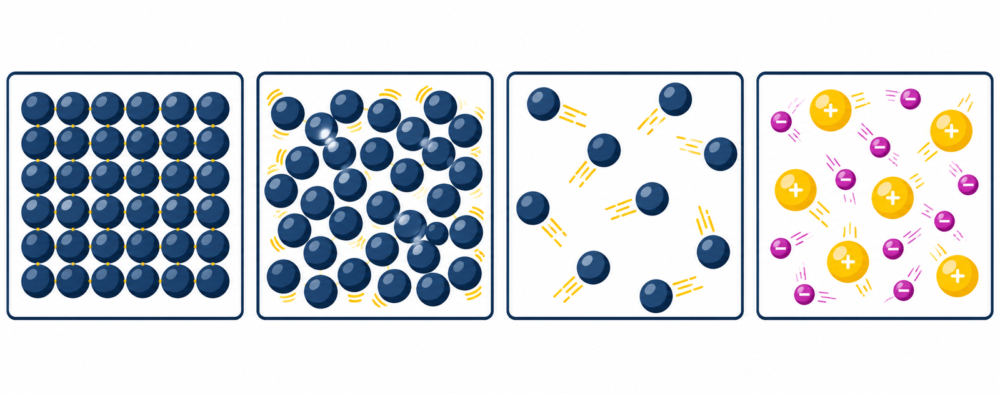
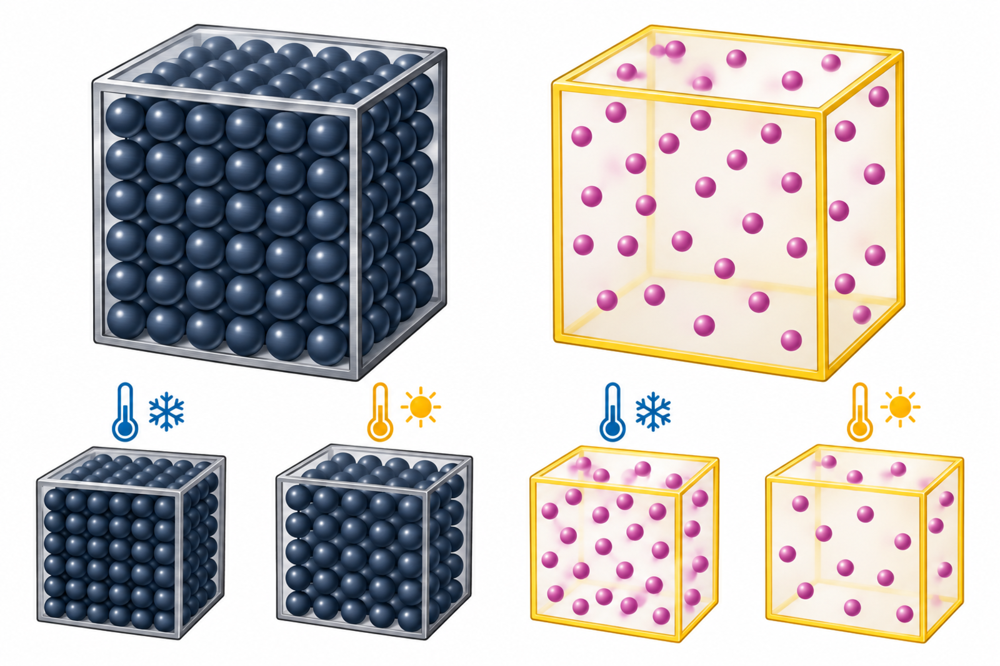

1IBK · LZK · 09.03.2026
1IBK · LZK · 09.03.2026Naturwissenschaften · Natural Sciences
Materie, Energie, Kräfte und Biologie
Matter, Energy, Forces and Biology
1IBK · LZK · 09.03.2026p_0=1013 hPa, melts at 0°C and boils at 100°C. These thresholds apply at that pressure. In ice, water molecules form an ordered hexagonal structure; in water they are close but mobile, and in vapour they move freely and rapidly.Ü 3.18 Water: at −30°C water is solid; at 20°C it is liquid; at 100°C it is at its normal-pressure boiling point (liquid and vapour can coexist during boiling); at 130°C it is gaseous, assuming normal pressure.
Ü 3.19 Hydrogen: melting point −259°C and boiling point −253°C. At 20°C it is gaseous. Yes, liquid hydrogen exists between its melting and boiling points, approximately −259°C to −253°C at the stated pressure; below the melting point it is solid.
Ü 3.20 Chip packet on a mountain: as altitude increases, external air pressure decreases. Gas trapped in the packet expands until pressures balance, so the flexible packet bulges. This is a pressure/volume effect, not the chips producing gas.
Ü 3.7 Particle dance (p. 93, related exercise): represent H₂O molecules with body = O and arms = H. Vapour: fast, free, chaotic movement; condensing: particles move closer and slow, with some intermolecular attractions; freezing: particles settle into an ordered hexagonal arrangement like a honeycomb.
p_0=1013 hPa bei 0°C und siedet bei 100°C. Diese Werte gelten bei diesem Druck. Im Eis bilden Wassermoleküle eine geordnete hexagonale Struktur; im flüssigen Wasser sind sie nahe beieinander und beweglich, im Wasserdampf bewegen sie sich frei und schnell.Ü 3.18 Wasser: Bei −30°C ist Wasser fest; bei 20°C flüssig; bei 100°C liegt es am Siedepunkt (beim Sieden können Flüssigkeit und Dampf gleichzeitig vorkommen); bei 130°C ist es bei normalem Druck gasförmig.
Ü 3.19 Wasserstoff: Schmelztemperatur −259°C, Siedetemperatur −253°C. Bei 20°C ist Wasserstoff gasförmig. Ja, flüssigen Wasserstoff gibt es ungefähr zwischen −259°C und −253°C beim angegebenen Druck; unterhalb des Schmelzpunktes ist er fest.
Ü 3.20 Volumen von Gasen: Auf einem hohen Berg ist der äußere Luftdruck geringer. Das Gas in der Chipspackung dehnt sich aus, bis sich die Drücke ausgleichen; dadurch bläht sich die flexible Packung auf. Das ist ein Druck-Volumen-Effekt.
Ü 3.7 Tanz der Teilchen (S. 93): Körper = O, Arme = H. Wasserdampf: schnelle, freie, ungeordnete Bewegung; beim Kondensieren rücken Teilchen näher zusammen und werden langsamer, erste Anziehungen entstehen; beim Gefrieren ordnen sie sich hexagonal wie eine Bienenwabe.
| State / Zustand | Shape / Form | Volume / Volumen | Particle picture / Teilchenbild |
|---|---|---|---|
| Solid (fest) / Fest | constant / konstant | constant / konstant | particles closely arranged; strong attractions / Teilchen dicht angeordnet; starke Anziehung |
| Liquid (flüssig) / Flüssig | adapts to container / passt sich dem Gefäß an | constant / konstant | particles close together, able to move past one another / Teilchen liegen nahe beieinander und können aneinander vorbeigleiten |
| Gas (gasförmig) / Gasförmig | adapts to container / passt sich dem Gefäß an | variable; fills container / variabel; füllt das Gefäß | particles far apart and moving freely / Teilchen weit auseinander, frei und schnell beweglich |
| Plasma (plasmaförmig) / Plasmaförmig | variable / variabel | variable / variabel | ionised gas; charged particles / ionisiertes Gas mit geladenen Teilchen |
| Substance / Stoff | Melting point (°C) / Schmelzpunkt (°C) | Boiling point (°C) / Siedepunkt (°C) |
|---|---|---|
| Helium [He] / Helium [He] | — / — | −269 / −269 |
| Nitrogen [N] / Stickstoff [N] | −210 / −210 | −196 / −196 |
| Water [H₂O] / Wasser [H₂O] | 0 / 0 | 100 / 100 |
| Lead [Pb] / Blei [Pb] | 327 / 327 | 1749 / 1749 |
| Tungsten [W] / Wolfram [W] | 3422 / 3422 | 5555 / 5555 |

m to its volume V: ρ=m/V. The SI unit is kg/m³; common alternatives include g/cm³ and kg/dm³. Density increases when mass increases at fixed volume or volume decreases at fixed mass.0.0012 g/cm³=1.2 kg/m³; spruce 0.5 g/cm³=500 kg/m³; water 1.00 g/cm³=1000 kg/m³; platinum 21.45 g/cm³=21 450 kg/m³.ρ=m/V. Useful conversions: 1 g/cm³=1000 kg/m³ and 1 dm³=1 L. Volume of a rectangular solid is length × width × height. A scale measures mass; convert to weight force with F_G=mg only when force is needed.Ü 3.8 Measuring regular bodies (p. 93): measure matchbox dimensions, calculate V=lwh, weigh each filled box, subtract the empty box’s mass if appropriate, and calculate ρ=m/V for soil, sand, sugar and flour. Record repeated measurements and units; the source provides no numerical measurements, so no unique numerical answers exist.
Ü 3.9 Room-air mass: V=9 · 7 · 3.6=226.8 m³. m=ρ V=1.2 · 226.8=272.16 kg.
Ü 3.10 Steel and polystyrene: steel cube volume 10³=1000 cm³=1 dm³; mass =7.85 kg. Polystyrene density 0.02 g/cm³=20 kg/m³, so equal mass occupies 7.85/20=0.3925 m³. Plate base area 2 · 1=2 m², hence height 0.3925/2=0.19625 m=19.625 cm.
Ü 3.39 (p. 114), salt solution: (a) 100 ml=100 cm³, so ρ=109/100=1.09 g/cm³ (also 1090 kg/m³). (b) 1 kg=1000 g; V=m/ρ=1000/19=52.63 cm³ approximately. (c) 1000 kg/m³=1 g/cm³.
Ü 3.41 (p. 114), compare densities: stone 4 t/1 m³=4000 kg/m³; oil is printed as “0.2 grams per cubic decimetre,” giving literally 0.2 g/dm³=0.2 kg/m³ (the unusually tiny value may be a source typo; do not silently change it); wood 70/0.1=700 kg/m³; polyethylene 0.86 kg/dm³=860 kg/m³; glass 2200 kg/m³; cork: cylinder V=π(0.5 cm)²(5 cm)=3.927 cm³, so ρ≈0.204 g/cm³=204 kg/m³; iron rod: cross-section 10 cm², length 100 cm gives V=1000 cm³=0.001 m³, and ρ=89 000 kg/m³. Lowest to highest by the literal data: oil, cork, wood, polyethylene, glass, stone, iron. (b) For a fully submerged object in water use F_A=ρ_w Vg with g≈10 m/s²: stone 40 N; oil sample volume 1 dm³: 10 N; wood 1 N; polyethylene 0.0004 N; glass 0.001 N; cork about 0.0393 N; iron 10 N. (c) Materials with density below water float: oil (if the intended value is the printed one), cork, wood and polyethylene; denser materials sink. These results depend on the given values and full-submersion assumption.
G measures how well current flows, with unit Siemens, [G]=S. Metals conduct through mobile electrons; silver conducts best, while copper and aluminium are lighter/cheaper and widely used in cables. Insulators (e.g. rubber, glass, porcelain, diamond, distilled water, air) conduct very poorly. Semiconductor conductivity lies between these extremes; silicon and germanium conduct better as temperature releases charge carriers. Electrolytes conduct through ions. For Ü 3.11, insert each test object into a circuit gap: bright lamp = good conductor, dim = moderate conductor, dark = insulator. Classify the named objects experimentally; the source gives no observations, so individual test results are not specified.m eines Körpers zu seinem Volumen V: ρ=m/V. Die SI-Einheit ist kg/m³; häufig sind auch g/cm³ und kg/dm³. Bei gleichem Volumen bedeutet größere Masse größere Dichte; bei gleicher Masse bedeutet kleineres Volumen größere Dichte.0{,}0012 g/cm³=1{,}2 kg/m³; Fichtenholz 0{,}5 g/cm³=500 kg/m³; Wasser 1{,}00 g/cm³=1000 kg/m³; Platin 21{,}45 g/cm³=21 450 kg/m³.ρ=m/V die Einheiten vereinheitlichen. Nützlich: 1 g/cm³=1000 kg/m³ und 1 dm³=1 L. Quader-Volumen = Länge × Breite × Höhe. Eine Waage misst Masse; nur bei benötigter Kraft wird mit F_G=mg in Gewichtskraft umgerechnet.Ü 3.8 Dichtemessung regelmäßiger Körper (S. 93): Zündholzschachtel-Abmessungen messen, V=lbh berechnen, gefüllte Schachtel wiegen, gegebenenfalls Leermasse abziehen und für Erde, Sand, Zucker und Mehl jeweils ρ=m/V berechnen. Wiederholungen und Einheiten protokollieren. Da keine Messwerte angegeben sind, gibt es keine eindeutigen Zahlenlösungen.
Ü 3.9 Masse der Raumluft: V=9 · 7 · 3{,}6=226{,}8 m³. m=ρ V=1{,}2 · 226{,}8=272{,}16 kg.
Ü 3.10 Stahl und Styropor: Stahlwürfelvolumen 10³=1000 cm³=1 dm³; Masse 7{,}85 kg. Styropordichte 0{,}02 g/cm³=20 kg/m³, gleich schwere Platte: V=7{,}85/20=0{,}3925 m³. Grundfläche 2 · 1=2 m², daher Höhe 0{,}3925/2=0{,}19625 m=19{,}625 cm.
Ü 3.39 (S. 114), Salzlösung: (a) 100 ml=100 cm³, also ρ=109/100=1{,}09 g/cm³=1090 kg/m³. (b) 1 kg=1000 g; V=1000/19=52{,}63 cm³ ungefähr. (c) 1000 kg/m³=1 g/cm³.
Ü 3.41 (S. 114), Dichteunterschiede: Stein 4 t/1 m³=4000 kg/m³; Öl laut gedruckter Angabe „0,2 Gramm pro Kubikdezimeter“ = 0{,}2 g/dm³=0{,}2 kg/m³ (ungewöhnlich klein, möglicherweise Druckfehler; nicht stillschweigend ändern); Holz 70/0{,}1=700 kg/m³; Polyethylen 0{,}86 kg/dm³=860 kg/m³; Glas 2200 kg/m³; Kork: Zylindervolumen V=π(0{,}5 cm)²(5 cm)=3{,}927 cm³, daher ρ≈0{,}204 g/cm³=204 kg/m³; Eisenstange: 10 cm² · 100 cm=1000 cm³=0{,}001 m³, ρ=89 000 kg/m³. Aufsteigend nach den wörtlichen Daten: Öl, Kork, Holz, Polyethylen, Glas, Stein, Eisen. (b) Vollständig eingetaucht in Wasser mit F_A=ρ_wVg und g≈10: Stein 40 N; Ölprobe mit Volumen 1 dm³: 10 N; Holz 1 N; Polyethylen 0{,}0004 N; Glas 0{,}001 N; Kork etwa 0{,}0393 N; Eisen 10 N. (c) Stoffe mit geringerer Dichte als Wasser schwimmen: laut gedrucktem Wert Öl, Kork, Holz und Polyethylen; dichtere Stoffe sinken. Die Ergebnisse hängen von den angegebenen Werten und der Annahme vollständigen Eintauchens ab.
G beschreibt die Stromleitung; Einheit Siemens, [G]=S. Metalle leiten durch frei bewegliche Elektronen; Silber leitet am besten, Kupfer und Aluminium sind leichter und günstiger und werden für Kabel verwendet. Nichtleiter/Isolatoren (z. B. Gummi, Glas, Porzellan, Diamant, destilliertes Wasser, Luft) leiten sehr schlecht. Halbleiter liegen dazwischen; Silizium und Germanium leiten bei höherer Temperatur besser, weil Ladungsträger freigesetzt werden. Elektrolyte leiten durch Ionen. Ü 3.11: Stoff in eine Unterbrechung des Stromkreises einsetzen: helles Lämpchen = guter Leiter, schwaches = mäßiger Leiter, kein Licht = Isolator. Armband, Büroklammer, Alufolie, Schokolade, Milch, Holz, Schuhe, Kaugummi und Pflanze experimentell testen. Die Quelle gibt keine Testergebnisse vor.
E, and its SI unit is the joule (J), the same unit as work W: 1 J=1 Nm=1 Ws. One joule is small: heating 1 kg of water by 1°C requires about 4190 J.Ü 3.15 Which energy form? Compass needle aligns north—magnetic; thunder—acoustic; wind turbine turns—mechanical (wind’s kinetic energy, with electrical output); X-ray image—radiant; stretched bungee cord—mechanical potential/elastic; vase at shelf edge—gravitational potential; two people collide—mechanical kinetic; fission—nuclear; smartphone without battery—electrical energy supply absent; global warming—thermal energy increase (driven by absorbed radiation and greenhouse processes).
Ü 3.16 Properties of materials: examples beyond the listed properties: hardness (resistance to scratching/indentation), electrical conductivity (ability to carry current), solubility (ability to dissolve), viscosity (resistance to flow). Each is a characteristic that can help identify or select a material.
Ü 3.17 Hardening: wet clay is hardened by drying and firing in a kiln, which removes water and changes the material irreversibly. Iron/steel can be hardened by heat treatment—heating and controlled rapid cooling (quenching); exact procedure depends on alloy.
Ü 3.18 and Ü 3.19: see the fully worked state classifications in the states-of-matter section above; these are the same p. 99 exercises.
Ü 3.20: see the pressure-and-volume explanation for the puffed chip packet in the states-of-matter section.
E, SI-Einheit Joule (J), dieselbe Einheit wie für Arbeit W: 1 J=1 Nm=1 Ws. Ein Joule ist klein: Um 1 kg Wasser um 1°C zu erwärmen, braucht man etwa 4190 J.Ü 3.15 Welche Energieform? Kompassnadel richtet sich nach Norden – magnetisch; Donner – akustisch; Windrad dreht – mechanisch (Windbewegung, mit elektrischer Ausgabe); Röntgenaufnahme – Strahlungsenergie; gedehntes Bungeeseil – mechanische Lage-/elastische Energie; Vase an Regalkante – gravitative Lageenergie; Zusammenstoß zweier Personen – mechanische Bewegungsenergie; Kernspaltung – Kernenergie; Smartphone ohne Akku – elektrische Energiezufuhr fehlt; Erderwärmung – Zunahme thermischer Energie (angetrieben durch Strahlungsaufnahme und Treibhauseffekte).
Ü 3.16 Stoffeigenschaften: weitere Beispiele: Härte (Widerstand gegen Ritzen/Eindrücken), elektrische Leitfähigkeit (Strom transportieren), Löslichkeit (sich lösen können), Viskosität (Fließwiderstand). Jeweils in 1–2 Sätzen erklären; Eigenschaften helfen Stoffe zu erkennen und auszuwählen.
Ü 3.17 Härtung: Feuchter Ton wird durch Trocknen und Brennen im Ofen hart; Wasser entweicht und der Stoff verändert sich dauerhaft. Eisen/Stahl lässt sich durch Wärmebehandlung härten: Erhitzen und kontrolliertes rasches Abkühlen (Abschrecken); das genaue Verfahren hängt von der Legierung ab.
Ü 3.18 und Ü 3.19: siehe die vollständigen Zustandslösungen im Abschnitt Aggregatzustände; es sind dieselben Übungen auf S. 99.
Ü 3.20: siehe Erklärung des aufgeblähten Chipspackung durch Druck und Volumen im Abschnitt Aggregatzustände.
F=ma; force is measured in newtons: 1 N=1 kg · m/s². A body is matter with mass and occupies space.F=ma. Third law (action–reaction): interacting bodies exert equal and opposite forces on one another; they act on different bodies and therefore do not cancel each other on one body.F=ma, a=F/m, m=F/a. Check that kg and m/s² give N. A “heavier” body means larger mass in physics, not necessarily a larger force in every location.Ü 3.23 Bowling: the bowler applies a force to the ball; the ball applies an equal opposite force to the hand. The ball’s motion changes; lane friction and gravity also act. The pins are pushed and move/deform. Different forces act on different bodies.
Ü 3.24 Car sensations: (a) accelerating: body tends to remain in its previous state; relative to car you feel pushed back. (b) braking: body tends to continue forward, so you lurch forward. (c) turning: inertia makes you feel pushed toward the outside; the car’s inward force changes direction.
Ü 3.25: (a) F=3 · 2=6 N. (b) a=6/12=0.5 m/s².
Ü 3.26, m=10 kg: (a) a=0.1 m/s²; (b) 0.5 m/s²; (c) 1 m/s²; (d) 2 m/s².
Ü 3.27, a=1 m/s²: (a) 800 N; (b) 1200 N; (c) 1600 N.
Ü 3.28: (a) True: double mass needs double force for the same acceleration. (b) False: at equal force, the smaller mass accelerates more. (c) True under the same braking force and other conditions: half the mass gives twice the deceleration magnitude.
Ü 3.34: force is a vector, measured in N, and can accelerate, decelerate, change direction or deform a body; represent it by an arrow whose direction is the force direction and whose length indicates magnitude using a chosen scale.
Ü 3.35: speeding up, slowing down, and changing direction are three motion effects; force may also deform a body.
V 3.5 two spring balances in series (p. 107): with a steady pull of 5 N, both balances ideally show 5 N, not 2.5 or 10 N; tension is transmitted through the series connection. Real readings may differ slightly from friction/calibration.
F=ma; Einheit Newton: 1 N=1 kg · m/s². Ein Körper besteht aus Materie, hat Masse und nimmt Raum ein.F=ma. 3. Axiom (Wechselwirkung): Zu jeder Aktion gibt es eine gleich große, entgegengesetzt gerichtete Reaktion. Die Kräfte wirken auf verschiedene Körper und heben einander daher nicht an einem einzelnen Körper auf.F=ma, a=F/m, m=F/a. Mit kg und m/s² erhält man N. „Schwerer“ bedeutet in der Physik größere Masse; die Gewichtskraft kann sich je nach Ort ändern.Ü 3.23 Bowling: Der Mensch übt eine Kraft auf die Kugel aus; die Kugel übt eine gleich große Gegenkraft auf die Hand aus. Die Bewegung der Kugel ändert sich; Reibung und Gravitation wirken ebenfalls. Die Kugel stößt Pins an. Kräftepaare wirken auf unterschiedliche Körper.
Ü 3.24 Kräfte spüren: (a) Beim Beschleunigen möchte der Körper seinen bisherigen Bewegungszustand beibehalten; relativ zum Auto fühlt man sich nach hinten gedrückt. (b) Beim Bremsen bewegt sich der Körper aufgrund der Trägheit weiter nach vorne. (c) In der Kurve fühlt man sich nach außen gedrückt; die nach innen gerichtete Kraft ändert die Bewegungsrichtung.
Ü 3.25: (a) F=3 · 2=6 N. (b) a=6/12=0{,}5 m/s².
Ü 3.26, m=10 kg: (a) a=0{,}1 m/s²; (b) 0{,}5 m/s²; (c) 1 m/s²; (d) 2 m/s².
Ü 3.27, a=1 m/s²: (a) 800 N; (b) 1200 N; (c) 1600 N.
Ü 3.28: (a) Richtig: doppelte Masse braucht bei gleicher Beschleunigung doppelte Kraft. (b) Falsch: Bei gleicher Kraft wird die kleinere Masse stärker beschleunigt. (c) Richtig, sofern Bremskraft und Bedingungen gleich sind: halbe Masse bedeutet doppelte Verzögerung.
Ü 3.34: Kräfte sind vektorielle Größen, werden in N gemessen und können beschleunigen, abbremsen, die Richtung ändern oder verformen. Darstellung als Pfeil: Richtung entspricht der Kraft, Länge ihrer Größe (mit gewähltem Maßstab).
Ü 3.35: Drei Bewegungswirkungen: schneller werden, langsamer werden und Richtung ändern; zusätzlich kann eine Kraft verformen.
V 3.5 Federwaagen in Serie (S. 107): Bei gleichmäßigem Zug mit 5 N zeigen im Idealfall beide Waagen 5 N an, nicht 2{,}5 oder 10 N; die Zugspannung wird übertragen. Kleine Abweichungen durch Reibung/Kalibrierung sind möglich.
F_G=mg, with g=9.81 m/s²≈10 m/s²; F_G is in N and m in kg. Mass is an intrinsic property measured in kg; weight force depends on local gravitational acceleration and is measured in N.F_A=ρ_{medium}V_{displaced}g=m_{displaced}g. Greater displaced volume or greater medium density gives greater buoyancy.F_A with F_G and body/medium densities: sink if F_A<F_G (body denser); neutral suspension if equal densities and forces; rise if F_A>F_G; a floating body at the surface has equilibrium forces and displaces enough fluid to balance its weight. A hot-air balloon rises because hot air inside is less dense than surrounding air. A submarine changes buoyancy by filling ballast spaces with water or air. A hydrometer floats deeper in lower-density liquid and its scale indicates density; at equilibrium F_A=F_G.1 m³=1000 dm³=1 000 000 cm³=1 000 000 000 mm³; 1 dm³=1 L; 1 L=1000 ml. Use g≈10 when the exercise does. For a floating body, set F_A=F_G.Ü 3.29: research values vary slightly: Moon g≈1.62 m/s², Mars g≈3.71 m/s². To match Earth’s weight force for a person with Earth mass m_E, require m_Pg_P=m_Eg_E, so m_P=m_Eg_E/g_P. For m_E=60 kg and Earth g=9.81, equivalent mass would be about 363 kg on the Moon or 159 kg on Mars. Mass itself does not change; this is the mass needed there to produce the Earth weight-force reading.
Ü 3.30 / K 3.20 experiment: the scale’s mass increase corresponds to a downward force on the water equal to buoyancy (multiply mass increment by g). As immersion/displaced volume increases, the increase grows; salt solution’s greater density produces greater force at equal displaced volume. Record two trials for each volume and average the force readings, then calculate ρ=F_A/(Vg) for each volume and average the five densities. No readings are supplied, so numerical water/salt-solution densities cannot be computed from the OCR alone.
13.1 worked example: 5 cm³=0.000005 m³. F_A=Vρ g=0.000005 · 1000 · 10=0.05 N.
Ü 3.31: use g=10 m/s². (a) 10 dm³=0.01 m³, water buoyancy =1000 · 0.01 · 10=100 N. (b) A 10 dm³ ball: water 100 N; mercury density 13.5 kg/dm³=13 500 kg/m³, so 1350 N. (c) Boje: F_G=50 · 10=500 N; 80 L=0.08 m³, so F_A=1000 · 0.08 · 10=800 N. Since fully submerged buoyancy exceeds weight, it rises; at the surface it can float with only enough volume submerged to displace 50 L.
Ü 3.32 submarine: F_G=500 · 10=5000 N. To hover, F_A=5000 N. Required displaced volume V=F_A/(ρ g)=5000/(1000 · 10)=0.5 m³.
Ü 3.34–3.37: force description and three motion effects as above; g=9.81 m/s²≈10 m/s²; buoyancy points upward against weight and equals displaced-medium weight.
Ü 3.38 conversions: 300 dm³=0.3 m³; 3 000 000 cm³=3000 dm³; 2 L=2 dm³; 0.02 L=20 cm³; 300 ml=0.3 L.
Ü 3.40: with g=10: 1 kg→10 N; 1 g=0.001 kg→0.01 N; 1 dag=0.01 kg→0.1 N; 10 dag=0.1 kg→1 N.
K 3.12 hydrometer: its weight is 0.9 N, so displaced-fluid volume V=F_G/(ρ g). In water: 0.9/(1000 · 10)=0.00009 m³=90 cm³, or 90% of its 100 cm³ volume submerged; 10% protrudes. In sugar water at 1050 kg/m³: V=0.9/(1050 · 10)=85.714 cm³, about 85.7% submerged and 14.3% above.
K 3.13 force and motion: from 2–3 s the body speeds up, so net force points along motion; 3–4 s uniform motion means net force is zero; 4–5 s it slows, so net force opposes motion. The graph’s curve outside those intervals is not described sufficiently for extra numerical conclusions.
K 3.14 hydrometers: for the same hydrometer, the one that sinks deepest is in the least dense liquid; the one that sits highest is in the most dense liquid. Exact ordering/values are absent from the image description.
K 3.15: a body sinks when weight exceeds buoyancy; floats at the surface when the displaced water provides buoyancy equal to its weight. A body denser than water generally sinks; less dense generally floats.
K 3.16 polystyrene: upon release underwater, weight acts downward and buoyancy upward; because polystyrene density is below water density, buoyancy exceeds weight and accelerates it upward.
K 3.17 coin: gravity acts downward, buoyancy upward; a metal coin denser than water has F_G>F_A and accelerates downward.
K 3.18 driftwood: cube volume 0.1³=0.001 m³. Mass =700 · 0.001=0.7 kg; weight =7 N with g=10. At float equilibrium displaced volume =m/ρ_w=0.0007 m³; base area 0.1 · 0.1=0.01 m², submerged height =0.0007/0.01=0.07 m=7 cm.
K 3.19 balloon: net lift per cubic metre is (1-0.9) · 10=1 N/m³. To support 200 kg, weight is about 2000 N; required volume =2000/1=2000 m³. This ideal calculation neglects the balloon envelope and other displaced structures, consistent with the given data.
F_G=mg, mit g=9{,}81 m/s²≈10 m/s²; F_G in N, m in kg. Masse ist eine ortsunabhängige Eigenschaft in kg; Gewichtskraft hängt von der örtlichen Gravitationsbeschleunigung ab und wird in N gemessen.F_A=ρ_{Medium}V_{verdrängt}g=m_{verdrängt}g. Je größer verdrängtes Volumen oder Mediendichte, desto größer der Auftrieb.F_A und F_G sowie Körper- und Mediendichte: Sinken bei F_A<F_G (Körper dichter); Schweben bei Gleichgewicht und gleicher Dichte; Steigen bei F_A>F_G; an der Oberfläche schwimmt ein Körper im Gleichgewicht und verdrängt so viel Flüssigkeit, dass deren Gewicht seinem eigenen entspricht. Ein Heißluftballon steigt, weil die heiße Innenluft weniger dicht als die Umgebungsluft ist. Ein U-Boot verändert den Auftrieb durch Füllen seiner Hohlräume mit Wasser oder Luft. Ein Aräometer taucht in einer Flüssigkeit kleinerer Dichte tiefer ein; im Gleichgewicht gilt F_A=F_G.1 m³=1000 dm³=1 000 000 cm³=1 000 000 000 mm³; 1 dm³=1 L; 1 L=1000 ml. Das Buch rechnet oft mit g≈10. Bei schwimmenden Körpern F_A=F_G setzen.Ü 3.29: Recherchewerte schwanken leicht: Mond g≈1{,}62 m/s², Mars g≈3{,}71 m/s². Für gleiche Gewichtskraft wie auf der Erde gilt m_Pg_P=m_Eg_E, somit m_P=m_Eg_E/g_P. Für m_E=60 kg und g_E=9{,}81: erforderliche Masse etwa 363 kg am Mond bzw. 159 kg am Mars. Die Masse einer Person bleibt gleich; berechnet wird die Masse, die dort dieselbe Gewichtskraft erzeugen würde.
Ü 3.30 / K 3.20 Versuch: Die Massenzunahme auf der Waage entspricht einer nach unten wirkenden Kraft auf das Wasser und damit dem Auftrieb (Massendifferenz mit g multiplizieren). Mit größerem verdrängtem Volumen wächst die Kraft; bei gleicher Eintauchtiefe erzeugt die dichtere Salzlösung mehr Auftrieb. Zwei Messungen je Volumen durchführen und Kraftmittelwerte bilden; dann ρ=F_A/(Vg) für jedes Volumen berechnen und die fünf Dichtewerte mitteln. Messwerte fehlen, daher sind keine Zahlenwerte für Wasser/Salzlösung aus der OCR berechenbar.
Rechenbeispiel 13.1: 5 cm³=0{,}000005 m³. F_A=Vρ g=0{,}000005 · 1000 · 10=0{,}05 N.
Ü 3.31: mit g=10 m/s². (a) 10 dm³=0{,}01 m³, Wasserauftrieb =1000 · 0{,}01 · 10=100 N. (b) Wasserball mit 10 dm³: Wasser 100 N; Quecksilber 13{,}5 kg/dm³=13 500 kg/m³, Auftrieb 1350 N. (c) Boje: F_G=50 · 10=500 N; 80 L=0{,}08 m³, F_A=1000 · 0{,}08 · 10=800 N. Vollständig untergetaucht steigt sie, da Auftrieb größer ist; an der Oberfläche reichen 50 L verdrängtes Wasser zum Schwimmen.
Ü 3.32 U-Boot: F_G=500 · 10=5000 N. Zum Schweben F_A=5000 N. Benötigtes Volumen V=F_A/(ρ g)=5000/(1000 · 10)=0{,}5 m³.
Ü 3.34–3.37: Kraftmerkmale und drei Bewegungswirkungen wie oben; g=9{,}81 m/s²≈10 m/s²; Auftrieb wirkt nach oben entgegen der Gewichtskraft und ist gleich der Gewichtskraft des verdrängten Mediums.
Ü 3.38 Umrechnungen: 300 dm³=0{,}3 m³; 3 000 000 cm³=3000 dm³; 2 L=2 dm³; 0{,}02 L=20 cm³; 300 ml=0{,}3 L.
Ü 3.40: mit g=10: 1 kg→10 N; 1 g=0{,}001 kg→0{,}01 N; 1 dag=0{,}01 kg→0{,}1 N; 10 dag=0{,}1 kg→1 N.
K 3.12 Aräometer: Gewichtskraft 0{,}9 N, daher verdrängtes Volumen V=F_G/(ρ g). In Wasser: 0{,}9/(1000 · 10)=0{,}00009 m³=90 cm³, also 90% eingetaucht und 10% herausragend. In Zuckerwasser mit 1050 kg/m³: V=0{,}9/(1050 · 10)=85{,}714 cm³, etwa 85,7% eingetaucht und 14,3% herausragend.
K 3.13 Kraft und Bewegung: Von 2–3 s wird der Körper schneller, die resultierende Kraft zeigt in Bewegungsrichtung; 3–4 s gleichförmige Bewegung bedeutet resultierende Kraft null; 4–5 s wird er langsamer, die Kraft wirkt entgegen der Bewegung. Für andere Zeitbereiche liefert die Beschreibung keine hinreichenden Zusatzwerte.
K 3.14 Aräometer: Beim gleichen Aräometer liegt die geringste Flüssigkeitsdichte dort vor, wo es am tiefsten eintaucht; die größte dort, wo es am höchsten schwimmt. Exakte Reihenfolge/Werte sind in der Bildbeschreibung nicht enthalten.
K 3.15: Ein Körper sinkt, wenn Gewichtskraft größer als Auftrieb ist; er schwimmt an der Oberfläche, wenn verdrängtes Wasser eine gleich große Auftriebskraft erzeugt. Dichtere Körper sinken im Allgemeinen, weniger dichte schwimmen.
K 3.16 Styroporwürfel: Beim Loslassen wirken Gewichtskraft nach unten und Auftrieb nach oben. Da Styropor weniger dicht als Wasser ist, ist der Auftrieb größer und beschleunigt den Würfel nach oben.
K 3.17 Münze: Gewichtskraft wirkt nach unten, Auftrieb nach oben. Eine Metall münze ist dichter als Wasser, daher F_G>F_A und sie beschleunigt nach unten.
K 3.18 Treibholz: Würfelvolumen 0{,}1³=0{,}001 m³. Masse 700 · 0{,}001=0{,}7 kg; Gewichtskraft 7 N mit g=10. Beim Schwimmen verdrängtes Volumen m/ρ_w=0{,}0007 m³; Grundfläche 0{,}1 · 0{,}1=0{,}01 m², Eintauchtiefe 0{,}0007/0{,}01=0{,}07 m=7 cm.
K 3.19 Heißluftballon: Nettoauftrieb je Kubikmeter (1-0{,}9) · 10=1 N/m³. Für 200 kg Last beträgt die Gewichtskraft etwa 2000 N; benötigtes Volumen 2000/1=2000 m³. Idealisierte Rechnung; Hülle und sonstige verdrängte Teile werden mit den gegebenen Angaben nicht berücksichtigt.
| Characteristic / Kennzeichen | Meaning / example / Bedeutung / Beispiel |
|---|---|
| Cells (Zellen) / Zellen | All organisms consist of one or more cells; bacteria, paramecia and amoebae are unicellular; humans, animals, fungi and plants are multicellular. / Alle Lebewesen bestehen aus einer oder mehreren Zellen; Bakterien, Pantoffeltierchen und Amöben sind Einzeller; Menschen, Tiere, Pilze und Pflanzen Vielzeller. |
| Metabolism (Stoffwechsel) / Stoffwechsel | Take in substances, chemically transform them/build body substances and release waste. Plants use water and carbon dioxide in photosynthesis and release oxygen. / Stoffe aufnehmen, chemisch umwandeln/körpereigene Stoffe aufbauen und Abfallstoffe abgeben. Pflanzen verwenden bei der Fotosynthese Wasser und Kohlenstoffdioxid und geben Sauerstoff ab. |
| Responsiveness/irritability (Reizbarkeit) / Reizbarkeit | Detect environmental stimuli and respond; pupils constrict in bright light. / Umweltreize wahrnehmen und darauf reagieren; bei hellem Licht verengen sich die Pupillen. |
| Reproduction (Fortpflanzung) / Fortpflanzung | Produce offspring independently and pass on hereditary material. / Selbstständig Nachkommen erzeugen und Erbmaterial weitergeben. |
| Movement (Bewegung) / Bewegung | All organisms show movement; plant growth toward light is an example. Some movements are microscopic. / Alle Lebewesen zeigen Bewegung; Pflanzenbewegung zum Licht ist ein Beispiel. Manche Bewegungen sieht man nur mikroskopisch. |
| Growth (Wachstum) / Wachstum | In multicellular organisms, growth occurs through cell division. / Bei Vielzellern erfolgt Wachstum durch Zellteilung. |